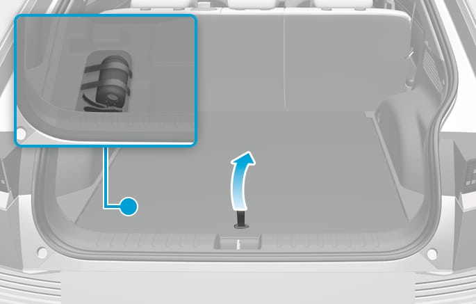

화재 발생 시
안전을 위해 소화기를 항상 차내에 비치하십시오.

2C_FireExtinguisher
소화기 사용 시의 주의사항 및 관리 방법은 소화기에 부착된 사용 설명을 참고하십시오.
-
즉시 안전한 장소에 정차하고 시동을 끄십시오.
-
탑승자를 안전한 곳으로 대피시킨 후 소화기를 사용해 진화하십시오.
-
진화 등 응급 조치를 할 수 없는 상황인 경우, 안전한 장소로 대피한 후 소방서 및 경찰서에 연락해 구조를 요청하십시오.
-
사람들이 화재 차량에 접근하지 못하도록 하십시오.
-
일반적인 소화기 사용법은 다음과 같습니다.
-
소화기의 안전핀을 뽑고 바람을 등지고 서십시오.
-
레버를 당기면서 빗자루로 쓸듯이 소화액을 방사하십시오.